- The challenge
- Two motions, two DoF
- System design
- Moving along the keyway
- Lifting a pin
- Electronics
- Rendering a pin
- Seeing inside the lock
- Results & demo
- What’s next
Lock picking is a task you do by feel, not by sight — which makes it a natural test bed for force-feedback interfaces.
The key idea? Render each virtual pin as a spring-damper on a custom 2-DoF device, and layer kinesthetic force, a force-drop click, a vibrotactile buzz, and a live visualization so users can read the hidden state of the lock.
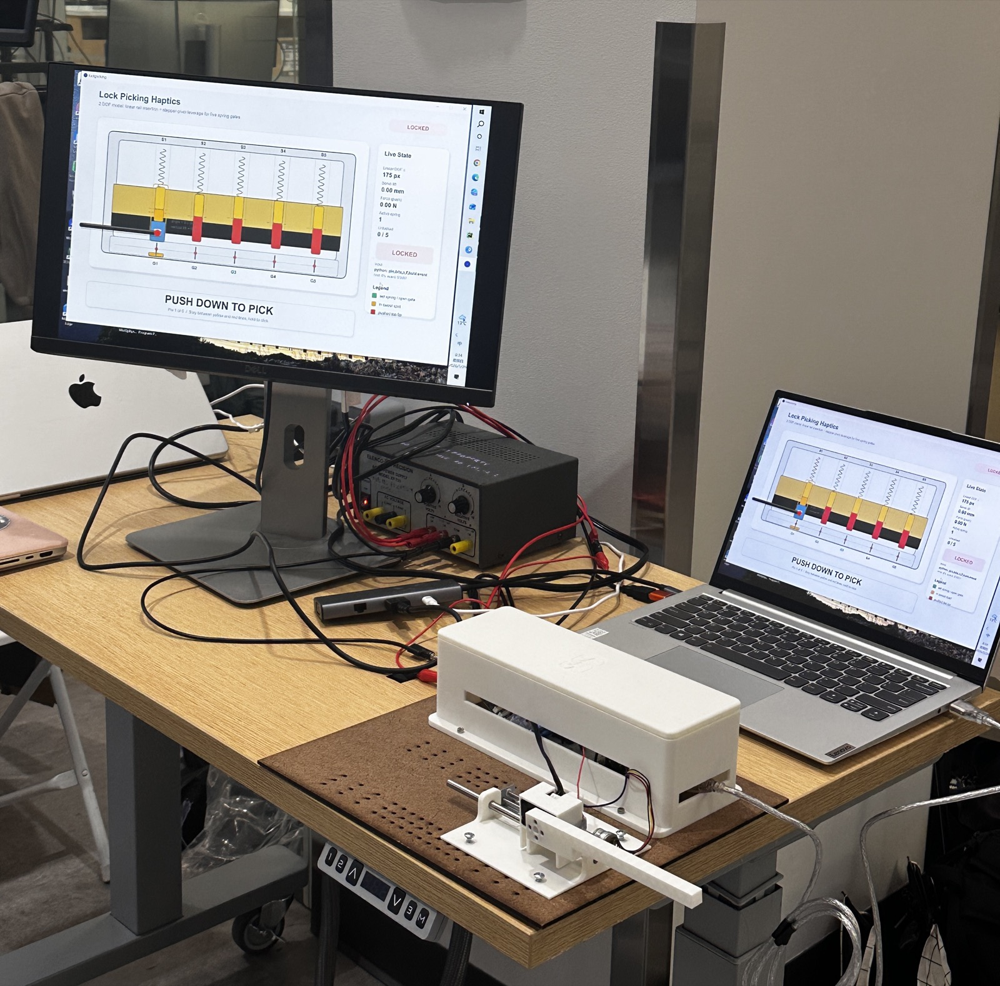
The challenge
What makes lock picking a good haptics problem?
Picking a pin-tumbler lock depends on subtle variations in force and stiffness rather than visual feedback. In a force-feedback system, user motion is measured and used to compute a response force from a virtual environment model — exactly what fine tool manipulation needs, since users rely on small changes in resistance to guide their motion.
Our goal was a simulator that lets users feel each pin, find the narrow height where it sets, and open a virtual lock through real-time force feedback alone — with the screen there to help them learn, not to do the work for them.
Two motions, two DoF
Which parts of a real pick do we actually need to render?
A real pick does two things: it slides in and out of the keyway to choose a pin, and it levers up to push that pin toward the shear line. We gave each motion its own degree of freedom:
- Insertion depth (x) — a carriage on a linear rail moves the whole pick back and forth, indexing from one pin to the next.
- Lift (y) — the handle pivots on a motor shaft; rotating it lifts the selected pin, and the same motor pushes back with the pin’s spring force.
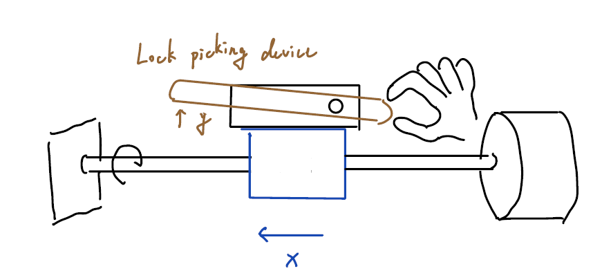
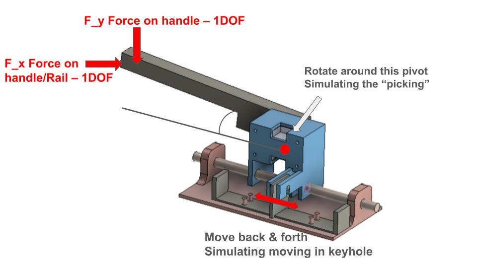
System design
How do we turn two motions into a working device?
The simulator splits into four subsystems, each owning one part of the experience:
- Insertion stage — a stepper-driven linear rail that carries the pick from pin to pin.
- Haptic pick — a handle on a Dynamixel XL330 that measures lift angle and renders pin force through current control.
- Lock model — a Python state machine on the host computer that turns lift into force and decides when each pin sets.
- Feedback — an ERM vibration motor for discrete events and a Processing visualization of the lock.
The lock housing, rail supports, pick handle, motor mounts, and electronics brackets were designed in CAD and 3D printed, with several iterations to improve stiffness, alignment, and ease of assembly.
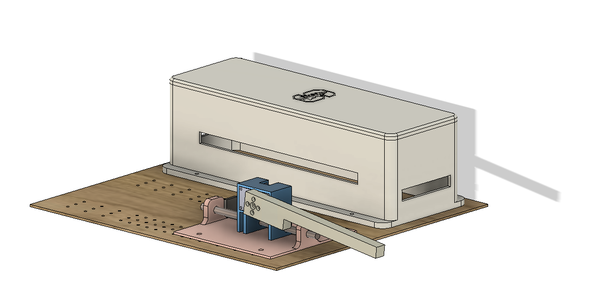
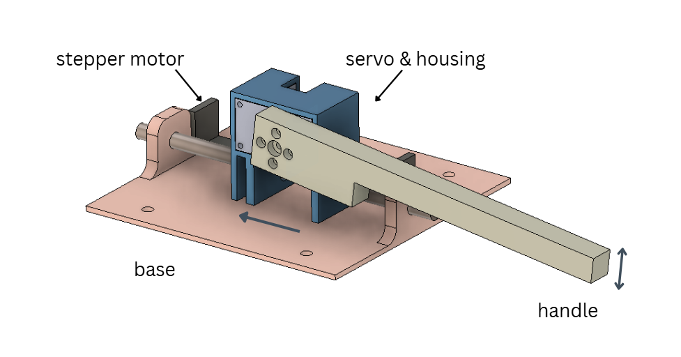
Moving along the keyway
How should the pick travel from one pin to the next?
The horizontal stage only has to bring the pick under each pin in turn, so precise, repeatable positioning mattered more than rendering force along x. We compared two transmissions:
We chose the linear rail. An Arduino drives the stepper through an A4988 and advances exactly 200 steps per pin on command. The driver is enabled only while moving, which lets the motor cool between pins.
Lifting a pin
How do we sense the lift and push back on the user’s hand?
The handle is bolted straight to the horn of a Dynamixel XL330, so one motor both senses the lift and renders the force with no extra transmission. The encoder angle θ is converted into pin lift at the tip of the 140 mm handle:
x = L θ, L = 0.140 m
The first prototype put the servo in a boxy housing above the rail. The final version moved to a long, slim handle on a compact pivot block that rides a guide rail alongside the linear actuator.
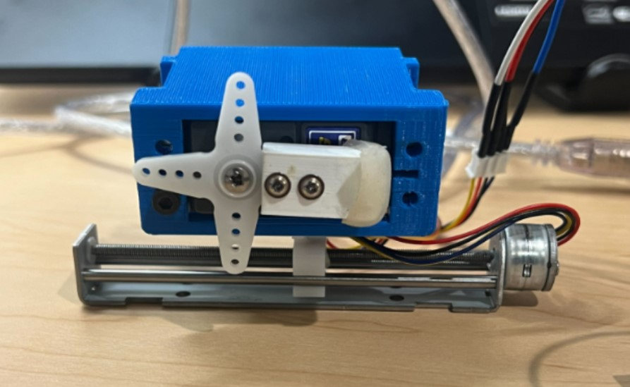
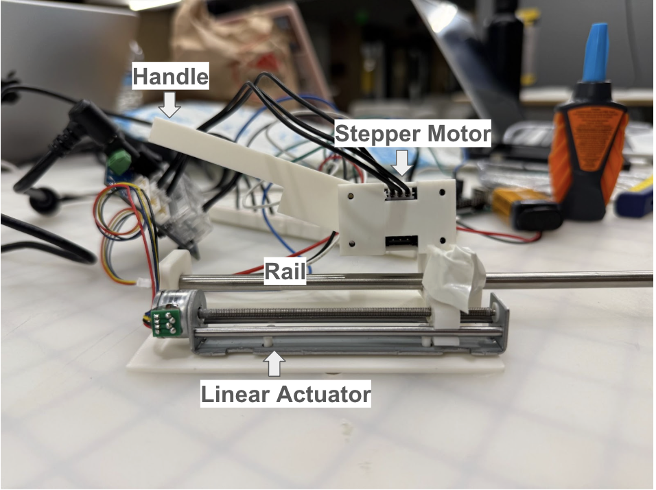
Electronics
How do the host, the Arduino, and the motors talk to each other?
A host computer runs the lock simulation and talks to two devices over serial at 115200 baud: the Dynamixel (on its own serial port) for force rendering, and an Arduino that drives the A4988 stepper driver and the ERM motor. This keeps low-level motor timing on the Arduino and the lock model on the host. The Arduino listens for single-character commands:
| Command | Action | Reply |
|---|---|---|
N | Advance one pin (200 steps) | DONE |
B | Reverse 1000 steps | BACK_DONE |
R | Return to the first pin | RESET_DONE |
V | Buzz the ERM twice (300 ms on, 100 ms off) | VIBE_DONE |
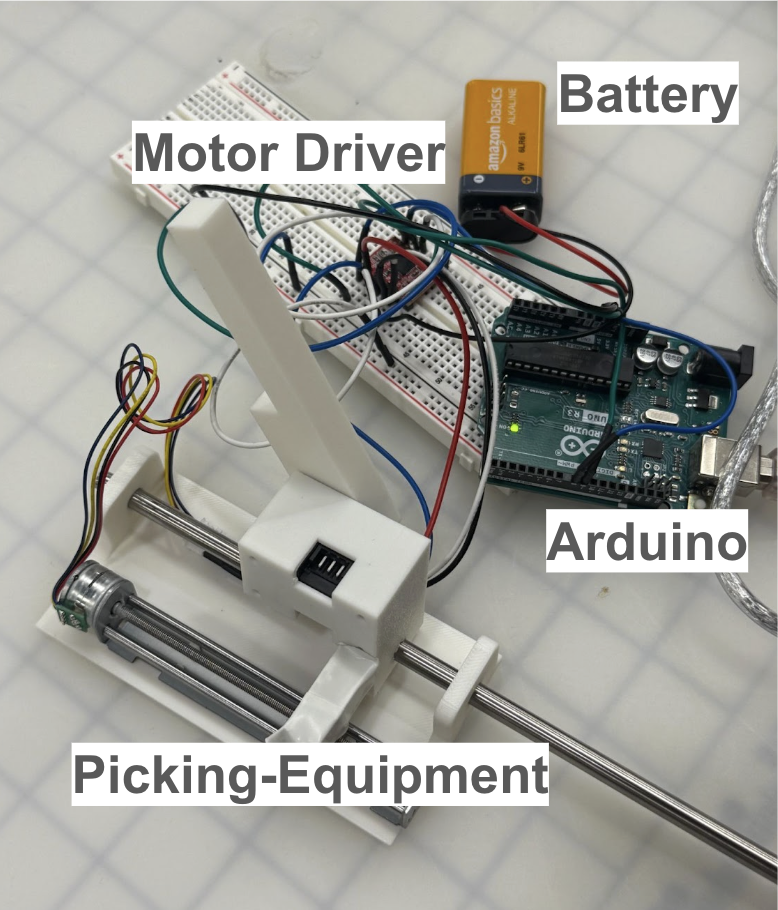
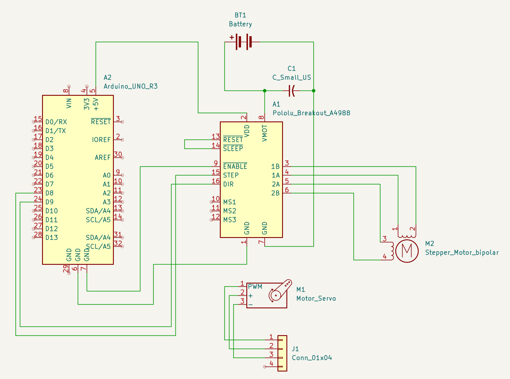

Rendering a pin
What should each pin feel like — and when does it set?
Each pin is a virtual spring-damper with its own stiffness, damping, and set height. The handle lift sets the pin displacement, and the reaction force is
F = −k x − b v
where v is the lift velocity, smoothed with an exponential filter (α = 0.15) to keep the damping term from amplifying encoder noise. Every pin gets different parameters, so each one feels different under the hand. They are generated from a fixed seed, so every player gets the same lock:
- Pin stiffness k40 – 100 N/m
- Pin damping b0.5 – 1.2 N·s/m
- Set height15 – 22 mm
- Sweet-spot width3 mm
- Hold time to set2.0 s
Setting, overshooting, and the click
How do we make it feel like a real pin, not just a spring?
A pin only sets if the user holds it inside a narrow sweet spot — between its set height and 3 mm above it — for 2 seconds. Lifting too far is overshooting, just like over-setting a real pin: the timer resets, and a stiff virtual wall pushes back:
Fwall = −kwall(x − xset − 3 mm), kwall = 200 N/m
Once a pin sets, the force drops to zero for 0.5 s — a transient click that feels like the pin falling into place. The user then returns the pick to neutral, the stepper advances to the next pin, and the cycle repeats until the last pin sets and the ERM buzzes twice to announce the lock is open.
From force to motor current
How does a virtual force become something you can feel?
The pin force is converted to a handle torque, then to a Dynamixel current command:
τ = F L, I = τ / Kτ
Small commands inside a deadband are zeroed to stop the handle from buzzing at rest, and every command is clipped to a current limit so the device stays safe no matter what the model asks for.
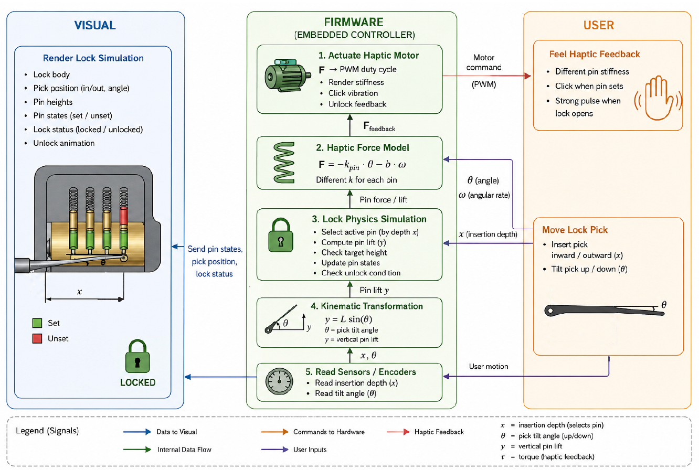
Seeing inside the lock
How does a first-time user learn what they’re feeling?
The haptics carry the experience, but a new user needs to connect each sensation to what is happening inside the lock. We prototyped two visualizations of the pin stacks:
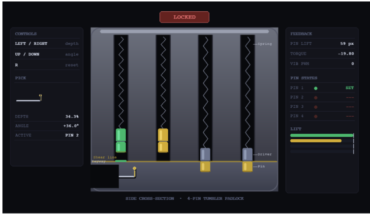
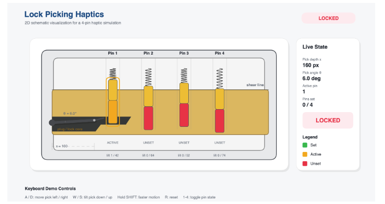
We kept the Processing version and redesigned it to look like a real lock. The host streams the active pin, set pins, lift, force, hold progress, and events (such as overshoot or pin set) over serial, so the screen always matches what the hand feels.
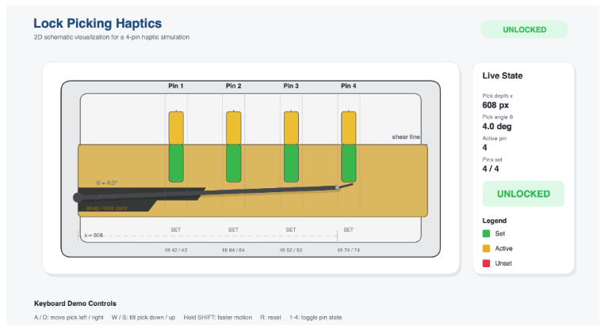
Results & demo
Could people actually feel the lock?
At the ME327 Demo Day, participants tried the simulator and filled out a post-experience survey. Users learned the interaction quickly and could reliably tell lock states apart from haptic cues alone.
- Realism of force feedback5.0 / 5.0
- System responsiveness5.0 / 5.0
- Ease of use5.0 / 5.0
- Sensation of setting a pin4.78 / 5.0
- Required precise control4.67 / 5.0
Users described the experience as “fun” and “cool to try,” and singled out the spring forces and pin-setting sensation as especially satisfying.

What’s next
What would make it feel more like a real lock?
The most common Demo Day suggestion was to split the pick and the tension wrench into two independent controls. Real lock picking is bimanual: one hand works the pins while the other applies torque to the cylinder. A second handle would enable torque-dependent binding order, oversetting, false sets, and security pins.
Since the pin-setting sensation scored slightly lower than the other categories, the click and set events could also be refined with sharper force transients and better vibrotactile cues. More pin types and lock configurations would add variety and difficulty levels.
We thank Prof. Allison Okamura for her guidance in refining the project direction, and course assistant Megan Coram for help debugging the stepper motor setup.